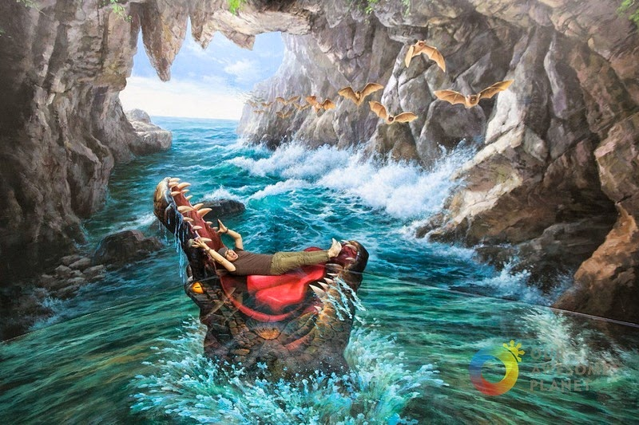

Art in Island
Cubao, Quezon City, Philippines

Cubao, Quezon City, Philippines
Art in Island is not your typical museum. As the biggest 3D Interactive Art Museum in Asia, it allows visitors not just to look, but to also interact with the museum pieces and become “part of the art.” With our fondness for taking photos and love for humorous pics, this place seems to have been made for Pinoys.
Art in Island is open Tuesdays to Sundays from 9:30 am to 9:30pm. They are close every Monday but are open during holidays. Art in Island’s admission fee is free for children who are or less than 3 feet. Admission fee for adults is Php500. Students, Senior Citizens and PWDs are entitled to a Php100 discount but they should have a valid ID (School ID, Senior Citizen ID and PWD ID) with them to avail the discount. Take note that they sell tickets until 8:00pm only.
Aqua Zone: Are you good with water? Because it starts with this zone. In this zone all you can see are Marine animals and everything will just BLUE you away. As you can see below, my sister and I enjoyed the cold floor lying down and interacting with the fishes and marine animals. For a second, I felt I know how to swim.
Animal Zone: After swimming with the sea creatures, the halls will lead you to land and air. Everything is in here. From Tropical Forests to Savannah, from lions to birds. If you don't have the time and the money to go to the Zoo or Africa, don't worry this is perfect enough.
Masterpiece Zone: You’ll see creative imitations of some famous paintings around the world in this zone. It was a world class experience for me because I've never seen the original pieces, yet this is like seeing it with a twist. Everything was perfect. They highlight some of the most famous paintings such as Leonardo Da Vinci's Mona Lisa and Edvard Munch's The scream.
Central Hall: This is the biggest zone of the museum. From its name, it is the center of the whole museum, It is so huge and spacious that I felt my heart skipped a bit upon entering it. I’ve never seen such space before. Inside are a series of huge 3D paintings as tall as five-story buildings.

Gora 2020. All rights reserved